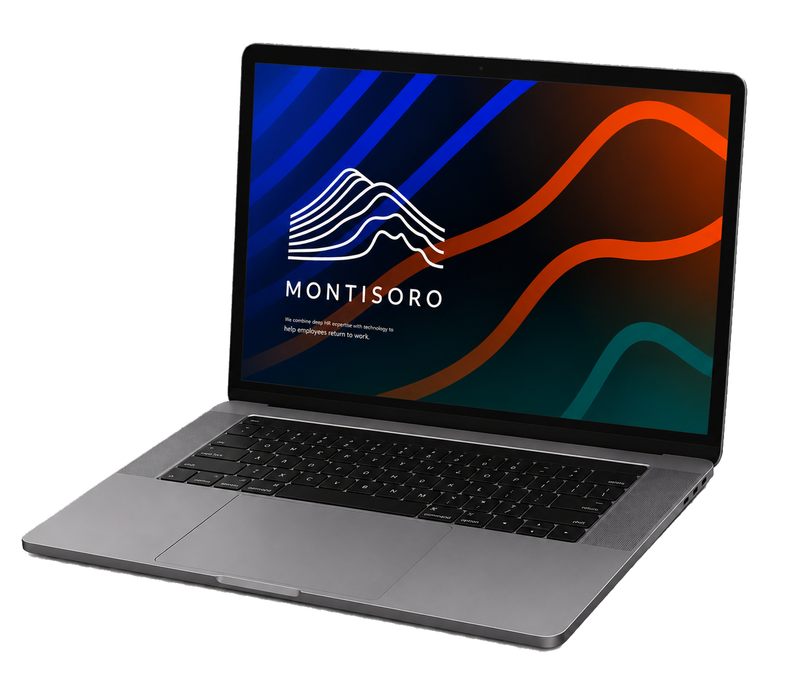
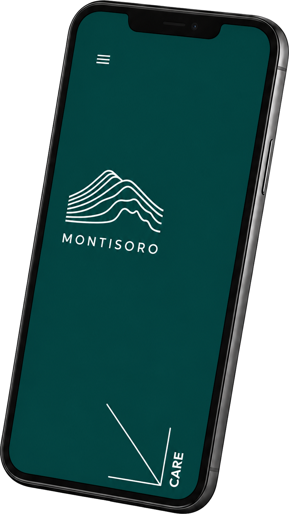

Storm
Alles op één plek




Technologie
Scroll verder — Storm bouwt zich laag voor laag op: het dashboard, de dossiers, de meldingen en de mobiele app, tot het volledige systeem in beeld staat.
Storm


Human in the Loop
De technologie ondersteunt — de expertise blijft menselijk. (Demo-vervolgsectie zodat je ziet dat de pagina na de parallax gewoon doorloopt.)